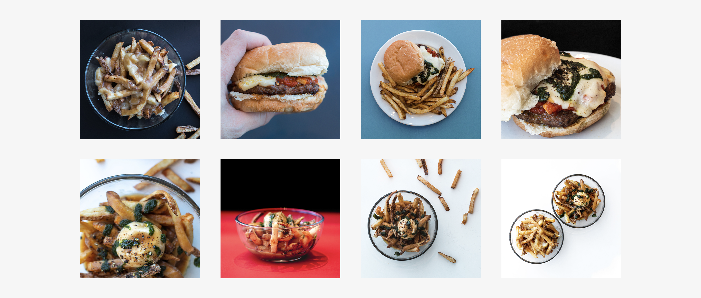
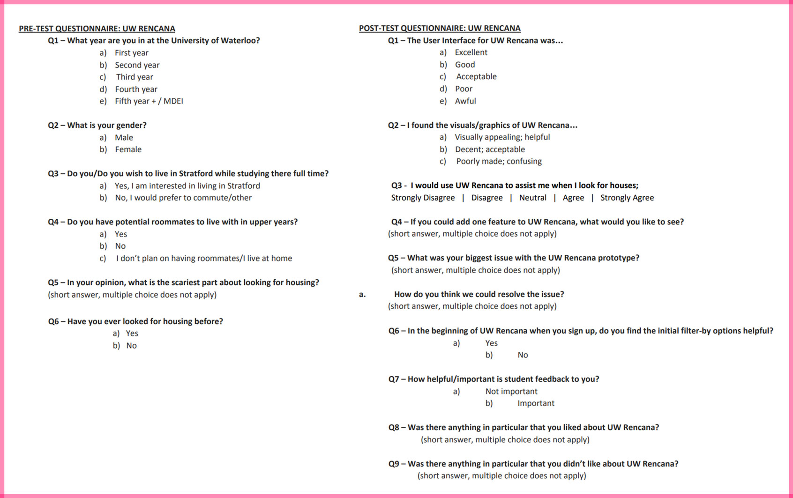
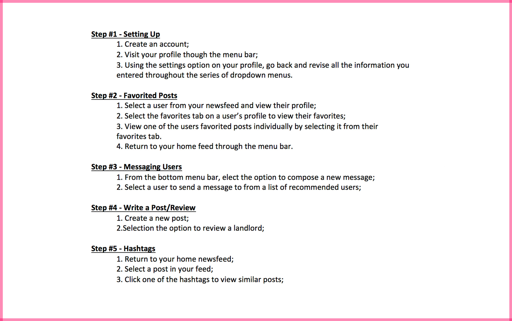

I worked in a team to redesign the website of local Stratford fast food chain, Boomer's Gourmet Fries (2019). I had a hand in roles such as low/high-fidelity prototyping, HTML, CSS and Javascript, and photographed/edited images for the final product.
THE TEAM
Zaid Amer, Julia Nassereddine, Nathan von Wistinghausen, and myself
Boomer's has acclaimed food and a good reputation. However, the Achilles heel to their business may be the outdated appearance of their website. As a team, we identified that while the design choices made by Boomer's were well intentioned, many of them fell short and failed to communicate the content of the website effectively. We were able to lump these shortcomings into two main categories; outdated design and usability.By targeting these pain points we were able to modernize the look and improve the usability of the Boomer's Gourmet Fries website, and better display their food.
SIMPLIFIED SITE MAP / WIREFRAMES
The redesigned website is a simple one page, continuous scroll website. We chose to do it in one page as the original Boomer's site had little content that needed to be moved over, as well as because a one page layout for a restaurant makes it very easy and effective for anyone to quickly scroll through and navigate.
Given the identified problems and our new site map, we made some changes to the website. Some changes we have made include a collapsable menu, as well as a landing page that features a photo of their food in a more appealing compared to Boomer's old slideshow header.
Redesigned Sitemap and Wireframes
PHOTOGRAPHY
Many of the photos displayed on the original Boomer's website were very saturated and didn’t do their food justice. On a quick photoshoot excursion, our team travelled to the restaurant where I photographed some quick photos of a few menu items, with the help and input from Zaid, Julia and Nathan.

HIGH-FIDELITY PROTOTYPES
Using Figma, and then some HTML, CSS and Javascript, we created a high fidelity version of our re-conceptualized Boomer’s website.
I worked in a team to design an prototype an application for mobile devices, called UW Rencana (2017), that would connect students studying at The University of Waterloo's Stratford School of Interaction Design and Business who are looking for shared housing. I primarily focused on user research and low-fidelity prototyping, but assisted in the creation of high-fidelity prototypes a bit as well.
THE TEAM
Celina Nguyen, Zaid Amer, Helen Chen
PERSONAL ROLES
UX Design, User Research, Low-Fidelity Prototyping, High-Fidelity Prototyping
TOOLS USED
Balsamiq, Adobe XD, Illustrator, Microsoft Word and Excel (for collecting user questionnaire info).
IDENTIFYING THE PROBLEMS
The Global Business and Digital Arts program (GBDA) at the University of Waterloo is currently split between two campuses. Years one and two are conducted primarily in Waterloo, on the University's main campus, but the third and fourth years are conducted at The Stratford School of Interaction Design and Business, in Stratford Ontario. Students enrolled in GBDA at the University of Waterloo know first hand the issue of trying to find a permanent residence in Stratford for upper years. To boot, with the upcoming changes to the program curriculum, students will be moving to Stratford full time as early as their second year, meaning the problem of finding housing in Stratford will be amplified as increasingly larger class sizes will be moving into Stratford more and more frequently. While this may prove to cause some difficulties, it will also have the potential to create a strong community of GBDA students within Stratford. It is for this reason that Celina Nguyen, Zaid Amer, Helen Chen, and myself chose to prototype a phone application called UW Rencana which is designed to connect students around Stratford. This application will allow GBDA students to find affordable shared housing.
USER NEEDS
The following section will focus on what problems real potential users of the UW
Rencana application may face. It consists of five interviews with five different individuals
enrolled in the Global Business and Digital Arts program at the University of Waterloo. Data
drawn from the interviews has been typed up into a summary, paragraph form, to present it in
the best and most understandable way possible. The script contains ten questions that were
written with the intention to best determine GBDA students’ current situation, in relation to
housing, as well as what concerns or issues they may have.
USER INTERVIEWS
Interviews were conducted in person with five different individuals (last names omitted for privacy): Michelle, Ronan, Madalayne, Adam, and Kaeli. All of these individuals have different backgrounds and experiences. All those interviewed have direct relations to the Global Business and Digital Arts program at the University of Waterloo. The interview is specifically aimed towards those students who are in the early years of the GBDA program to where they are going to start thinking about housing in their future years. The participants provided us with their opinions on what they think about their current housing situation as well as any concerns that they have at the moment when it comes to roommates, locations, etc.
1. Are you interested in moving to Stratford permanently for the third and fourth years of your program, or would you prefer to commute (or are you undecided)?
2. Where do you currently live - on campus, off campus housing, or at home, and what has been your experience with you current living conditions?
3. Would you prefer to live in a residence that is associated with the school or live off-campus?
4. What housing style would you prefer, if any? (eg. apartment, house, etc.)
5. Do you plan on moving up to Stratford or are you going to commute?
6. Do you have a set of potential roommates for upcoming university years?
7. What are some of the most important things that you would look for when searching for a place to live?
8. What are qualities/traits that you would look for when searching for roommates?
9. What concerns do you have with the process of finding housing for future years at Waterloo, if any?
10. Do you feel like the University of Waterloo should make a more involved effort to help students find off campus housing, if they need it?
For a closer look at responses given by our participants, refer to our team's First Report [opens in new tab], on pages 4-9.
Alyssa is a local student at the University of Waterloo living at home studying Global Business and Digital arts. On the side, she runs a highly successful blog on Tumblr where she gives teenagers tips about school and life in general.
Alyssa's Problem
Living at home or near the Waterloo main campus are options for Alyssa, however she will have to commute daily. However, as the Stratford campus is new and has no student housing nearby, she has no clue as of to where she would live. Stratford would also be an unfarmiliar place, and she'd feel out of the loop.
Evan
Evan is a second year student enrolled in the Global Business and Digital Arts program at the University of Waterloo. He plays on the University's soccer team and spends a lot of free time training and practicing. By consequence, he misses out on a lot of extracurricular events hosted by the GBDA program.
Evan's Problem
As Evan does not own a car, he is unable to commute, which has forced him to move to Stratford. However, if he wants to remain on the school's soccer team he will need a way to commute back to Waterloo for games and practices regularly. His second major problem is he knows very few people in GBDA, leaving him unable to find roommates.
Ibtesam
Ibtesam is a third year GBDA student who has spent a year living in city of stratford, as he is now a fulltime student at the stratford campus. He is entrepreneurial down to his fingertips and is currently involved in a business prospect involving the start up incubator at stratford.
Ibtesam's Problem
Ibtesam will need to find new housing in Stratford. The past year in Stratford, he did not get along with his landlord. He is having trouble finding a new landlord, roommates, all while balancing planning for his business venture.
Lela
Lela is a second year GBDA student who has been living on residence at the University of Waterloo main campus for the first two years of her undergrad, in a single-room suite. Originally from Hamilton, it wasn’t a particularly far move for her. She has mild epilepsy which she has been able to manage efficiently, since her parents moved to Waterloo with her in a nearby townhouse and have been able to help her manage her symptoms.
Lela's Problem
Lela’s parents have allowed her to move to Stratford for her third year of studies, however because of her epilepsy she has difficulty finding suitable accommodations and roommates for her needs. Unfortunately, most of Lela’s friends do not study in GBDA, which brings up the issue of finding roommates for Stratford.
IDENTIFYING KEY REQUIREMENTS
The following section outlines the key requirements for students:
1. Students should be able to filter housing by housing types.
2. Students should be able to filter houses by proximity to campus (ie. 5km-7km, 7km-9km etc).
3. Students should be able to publicly post requests for roommates/houses/appartments to a board for others to see.
4. Students should be able to communicate (private message).
5. Students should be able to review/rate houses and landlords, and sort/filter them by said ratings.
Our team issued two individual questionnaires to the users who tested our application. Before testing, along with their respective consent form, subjects were given a pre-test questionnaire which they were to fill out. After completing the tasks, users took a post-test questionnaire.
The pre-test questionnaire gave us a better idea of where our users were from, in terms of age, gender, and other questions to give us a general sense of who was to be testing our high-fidelity prototype. After the testing, the post-test questionnaire was composed of questions regarding the design of UW Rencana as well as its usability, to help us pinpoint our application’s strong and weak points. In-page below are both questionnaires to provide context for the primary data that will be analyzed in this section.

Pre/Post Questionnaire for participants.
The usability testing saw the user’s complete a set of tasks that included navigating through the high-fidelity prototype and carrying out certain actions. We went on to analyze the gathered information from the usability testing and surveys.

Usability Testing - User Tasks.
A majority of surveyed users found the graphics of the application to be appealing to the point where they actually aided the process of navigating through the application, while the remainder of those who took the survey found them to pass as acceptable graphics, presumably adding nothing to the application, but not taking away from it either. There were no surveyed users who believed that the graphics actually rendered the application confusing, or who found the graphics to be poorly made.
We also included questions directed at the ease of usability of UW Rencana; Figure B displays the answers users gave when asked how they found the user interface for the application’s prototype. The feedback was mostly positive as well for this section of the questionnaire, with 1 individual answering ‘Excellent’, and 3 people answering ‘Good’. There was no answers indicating that the user interface of UW Rencana was anything less than ‘Acceptable’.
Horribly coloured graphs showing the results. I am so sorry, I'll fix the colours at a later date.(the middle one reminds me of a ham sandwich and i admittedly like that about it)
While the prototype was relatively well received from a stylistic and user-friendly standpoint, the question of whether one would use it to actually hunt for housing still stood. It was for this reason that we provided a question asking users if they would make use of the application in the post-test questionnaire. The question was asked through a likert-scale format, giving the users five options ranging from ‘Strongly Disagree’ through ‘Strongly Agree’. While a majority of users replied positively (‘Agree’) there was no one who replied with ‘Strongly Agree’, meaning that while our application was good enough to be functional and appealing, it may not necessarily be the first choice for many students.